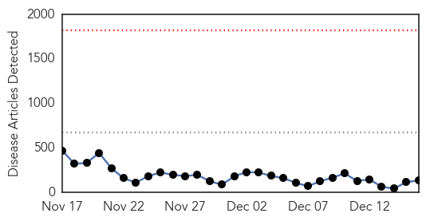
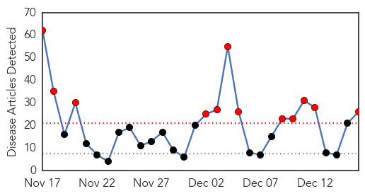
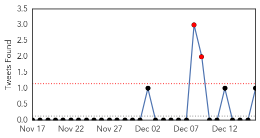
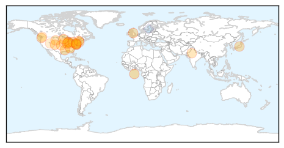

Ebola
30-Day Web Trend
0 alerts, 0 warnings

30-Day Twitter Trend
0 alerts, 0 warnings

Article Locations

Article Confidences

Top Articles:
- 1.000
- American doctor cured of Ebola returning to Liberia
- 1.000
- Liberia Starts Serum Treatment to Fight Ebola
- 1.000
- Massachusetts doctor cured of Ebola returning to Liberia
- 1.000
- Morbidity and Mortality Weekly Report (MMWR): Update: Ebola Virus Disease Epidemic - West Africa, December 2014 - Sierra Leone
- 0.999
- Mali ends last quarantines, could be Ebola-free next month
- 0.999
- Ebola spreads via social clusters, not randomly, Yale report says
- 0.999
- Endless Ebola Epidemic? That's The 'Risk We Face Now,' CDC Says
- 0.999
- UIHC becomes Iowa’s Ebola treatment center
- 0.998
- WHO: True Ebola Toll Hidden
- 0.998
- Endless Ebola Endemic? That's The 'Risk We Face Now,' CDC Says
- 0.998
- Ethiopians arrive in W Africa to fight Ebola
- 0.998
- Ebola lasts for a long time in semen even after recovery: Scientists
- 0.998
- Sierra Leone: Sierra Leone to Search Freetown Houses for Ebola Patients
- 0.998
- Mali ends last quarantines, could be Ebola-free next month
- 0.998
- RPT-Mali ends last quarantines, could be Ebola-free next month
- 0.997
- Suspected Ebola patient tests negative for virus
- 0.997
- Ebola: UN forum urges debt relief for hard-hit countries
- 0.997
- Ebola – 'terrible learning curve' that could stop virus in Sierra Leone
- 0.997
- Sierra Leone to search for Ebola cases in capital
- 0.996
- PolitiFact's liars of the year: The politicians who played the Ebola fear card
- 0.996
- 'With The Money From Corruption, We Could End Ebola'
- 0.994
- Why Sierra Leone Literally Had to Cancel Christmas
- 0.994
- The CDC's Ebola Predictions in September Were Reasonable
- 0.994
- Palo Conteh “blow mind” « Awoko Newspaper
- 0.993
- Men in Recovery Should Wear Condoms for at Least 3 Months
- 0.993
- Christmas banned in Sierra Leone to stop Ebola spread
- 0.993
- Ebola Outbreak Causes Christmas Celebrations to be Banned in Sierra Leone
- 0.992
- Sierra Leone’s crisis deepens as doctors die of Ebola
- 0.991
- Ebola survivors face critical problems
- 0.991
- ASEAN Plus Three to Heighten the Ebola Preparedness and Response
- 0.991
- NERC launches Operation WAS « Awoko Newspaper
- 0.990
- World Bank Group Ebola Response Fact Sheet (15 Dec 2014) - Liberia
- 0.986
- Battle against Ebola to go 'mini, local' — experts
- 0.985
- Consortium led by Cambridge firm Kymab to develop ebola treatments
- 0.982
- $1 million state grant will help develop rapid Ebola test
- 0.980
- India’s ban on Islamic State
- 0.980
- Debating the ‘right to die’
- 0.980
- WEATHER BLOG: Dry Out
- 0.980
- Experts: Lone-wolf attacks could happen in U.S.
- 0.980
- Police: Baltimore man attacks family with sword
- 0.980
- 1 Dead After Accident Involving Stolen Ambulance
- 0.980
- Police: Robbers steal money, drug from pharmacy
- 0.980
- Tavon White Back On Stand In BGF Trial
- 0.980
- American in North Korea denounces U.S. policy
- 0.980
- Kailahun Authorities Demand Ban on Travelling
- 0.979
- No need for U.S. army help in Sierra Leone Ebola fight
- 0.979
- Archives > News > Sacramento hospitals named Ebola treatment centers
- 0.978
- No need for U.S. army help in Sierra Leone Ebola fight - Britain
- 0.977
- Korea sends backup staff to fight Ebola in Sierra Leone
- 0.977
- Greening: New UK support for child victims of Ebola - Sierra Leone
Showing top 50 articles...
Top Tweets:
- 0.977
- Merci aux courageux combattants d’Ebola de la Guinée!
- 0.921
- RT: Read the latest update on the Ebola virus disease epidemic in West Africa. http://t.co/SLGzyz2HMC http://t.co/jmFR7nrmjD
- 0.851
- For Ebola Patients in Sierra Leone, Survival Takes More Than Medicine | WIRED http://t.co/yrcumxRb9l
- 0.728
- Sierra Leone: 40 new cases confirmed on 13 December | EbolaOutbreak ElbowOutEbola
- 0.718
- In Guinea: Partners running treatment centers well. Wonderful to speak w. health workers from around the world who are fighting Ebola
- 0.698
- What it's like to travel in West Africa during the Ebola outbreak http://t.co/yCixQ2bya3 http://t.co/eiYIFeyIAy
- 0.692
- RT: Studies predicted that the Ebola epidemic would result in hundreds of thousands of cases. That won't likely happen. http://t.c…
- 0.673
- RT: Mission: Critical - The Ebola outbreak in W. Africa is among the most complex challenges ever to confront CDC. http://t.co/3SP…
- 0.629
- 4 Ways We Are Working to Stop the Ebola Outbreak. EbolaResponse http://t.co/6TJ07thEr1
- 0.623
- Except flu and Ebola both have climate drivers too Most Americans are clueless about how climate change will affect their health
- 0.617
- CDC Foundation support to Ebola response helps advance & accelerate progress in so many critical ways in affected countries. Saves lives.
- 0.601
- For Ebola patients in Sierra Leone, survival takes more than medicine http://t.co/0rgIG2Tb3p http://t.co/MRvk5KzYqd
- 0.595
- Even before Ebola hit, the village was so isolated that acute illness was almost certainly a death sentence. Ebola http://t.co/pa8v0fmtLW
Influenza
30-Day Web Trend
12 alerts, 0 warnings

30-Day Twitter Trend
2 alerts, 0 warnings

Article Locations
Article Confidences

Top Articles:
- 0.999
- NE Ohio hospitals react to flu outbreak
- 0.998
- Five dead as flu spreads across Ga.
- 0.997
- Wandtv.com, NewsCenter17, StormCenter17, Central Illinois News-
- 0.997
- Flu is here but might not look like flu
- 0.990
- Protecting yourself and loved ones from the flu
- 0.989
- Mendota Heights School to Close Early Because of Flu
- 0.987
- Marion County Hospitals to Begin Temporary Hospital Visitor Restrictions
- 0.986
- Flu prompts visitor restrictions at Capital Region hospitals
- 0.976
- Fairview hospitals to screen visitors for flu
- 0.976
- Loveland Toddler Who Died From Flu A Wake-Up Call For Parents « CBS Denver
- 0.972
- Avian flu confirmed in wild birds in state
- 0.971
- Local experts: Shots still way to go despite flu mutation
- 0.971
- Concerns over flu shot effectiveness after H3N2 strain mutates
- 0.885
- Bird Flu Updates From Japan, Germany & South Korea
- 0.883
- H5N2, H5N8 avian flu viruses surface in US
- 0.859
- Fairview restricts visitors due to widespread flu
- 0.816
- Fairview restricts visitors due to widespread flu
- 0.812
- Wild duck, captive falcon infected with bird flu in Washington
- 0.789
- NYC to require flu shots in city regulated preschools and child care centers
- 0.775
- Tourists in Jaipur face threat of zoonotic diseases
- 0.745
- The government compensates those injured by vaccines. Who knew?
- 0.706
- Number of absentees increases in Oak Park schools
- 0.649
- MCPH Keeping Eye Out for Mutated Flu Strain
- 0.602
- H1N1 Pandemic vs. Ice Bucket Challenge: Which Was More Infectious?
- 0.570
- B.C. poultry industry scrambles to find Christmas turkeys
- 0.553
- Findings of Jalandhar lab questioned
Top Tweets:
- 0.785
- Weekly CDTR out, 50/2014: Ebola update; new cases of wild poliovirus; new human cases influenza A(H5N1) in Egypt http://t.co/1BXK8wKOJU